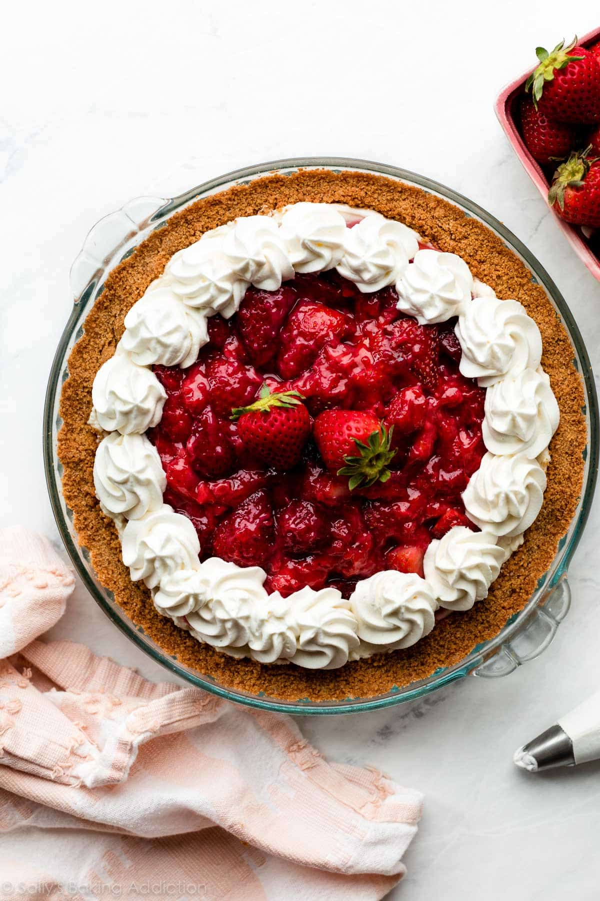

Strawberry Cream Cheese Pie

Description
With a light cheesecake filling and the fresh taste of strawberries present in every bite, this may
be the best pie you've ever had!
Ingredients
Strawberry Topping
- 1.5 lbs (24 ounces or about 680 grams) fresh strawberries, rinsed and hulled
- 2 Tablespoons (30ml) water
- 1.5 Tablespoons (11g) cornstarch
- 1/3 cup (67g) granulated sugar
- 1 teaspoon lemon zest
Graham Cracker Crust
- 1 and 1/2 cups (180g) graham cracker crumbs (about 12 full sheet graham crackers)
- 1/4 cup (50g) granulated sugar
- 6 Tablespoons (85g) unsalted butter, melted
Filling
- 1 cup (240ml) cold heavy cream
- 8 ounces (226g) full-fat block cream cheese, softened to room temperature
- 1/2 cup (60g) confectioners' sugar
- 1 teaspoon pure vanilla extract
- 1 teaspoon lemon juice
- optional for topping: homemade whipped cream